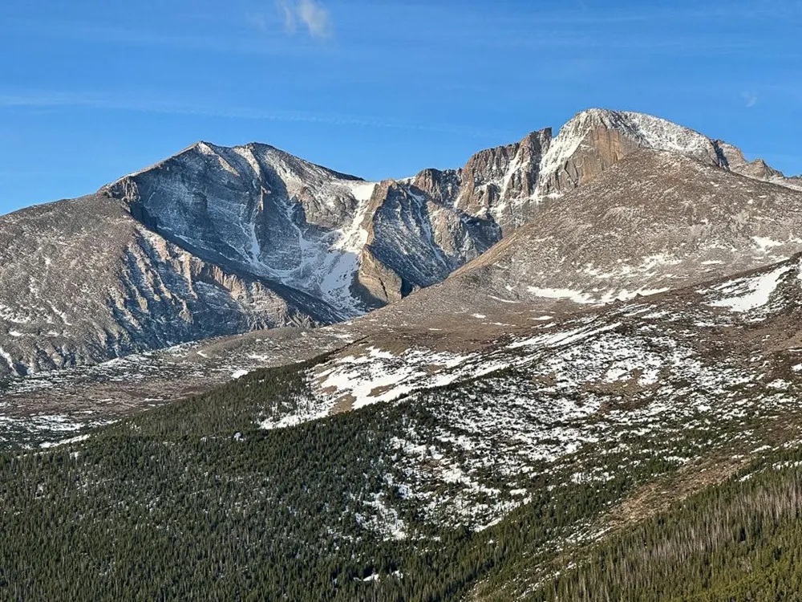

COLORADO SNOWPACK · OFFICIAL NRCS MEASUREMENTS
Colorado snow.
In perspective.
Follow the snowpack through the season,
with a little context along the way.

Loading the verified snowpack snapshot…
The snowpack data couldn’t load.
Please try again. You can also view the official NRCS charts.
WATER HELD IN THE SNOWPACK
—inches
Published NRCS station-based series
Median for this date
1991–2020 baseline · NRCS source ↗
THE BIGGER PICTURE
The season at a glance.
Compare this season’s snow water with last year and the 1991–2020 median. A water year runs from October through September.
202620251991–2020 median
Snow water equivalent · inches
Drag, tap, or use the arrow keys.
View the numbers
| Date | Historic Median |
|---|
BASIN CONDITIONS
Snowpack across Colorado.
Follow the chart’s date above. Select a basin to explore its season.
Loading basin boundaries…
Map details & image download
Colors show station-based basin readings, not snow coverage or total water storage. Comparisons use each basin’s 1991–2020 median.
Generalized boundaries: USDA NRCS. State outline: U.S. Census Bureau. Shapes are clipped to Colorado; readings describe complete NRCS reporting basins.
A LITTLE CONTEXT
This week, explained.
Water, not snow depth.
Snow water equivalent tells us how much water the snow would yield if it melted. One inch of snow water is not the same as one inch of snowfall.
COLORADO SNOWPACK WEEKLY
The week in snow.
About a minute to read.
What changed this week, how it compares with past seasons, and what the numbers can tell us. A short email, grounded in NRCS measurements.
Take a closer look.
Download the measurements or read how the comparisons are calculated.